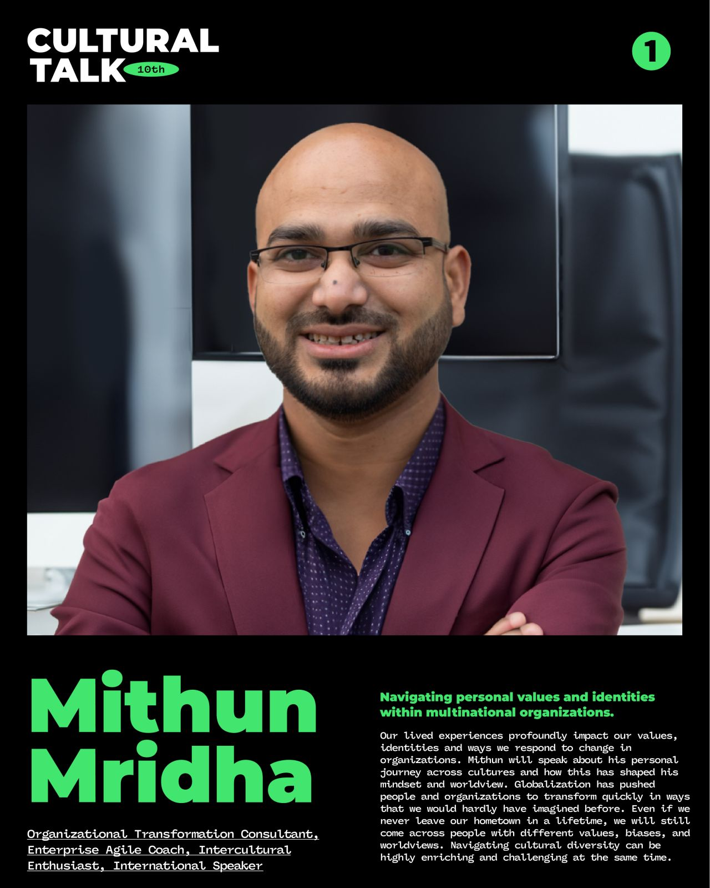
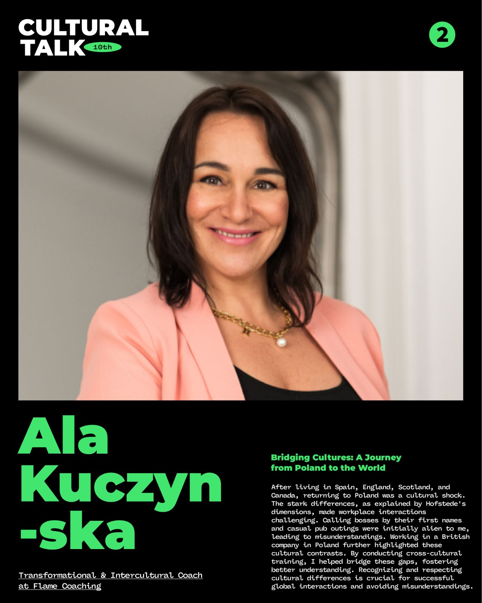
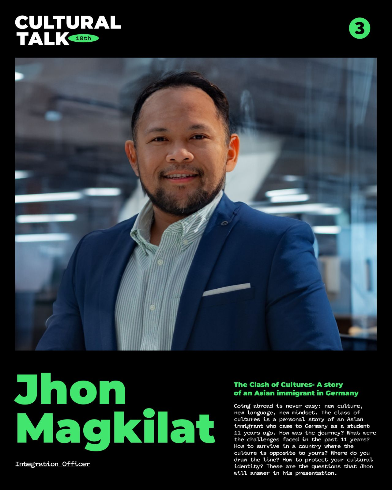

10th Cultural Talk For Diversity
Theme: Life Across Different Cultures

Event Details
Date: 14 September, 2024
Time: 20:00 (KST) / 12:00 (CET) / 11:00 (GMT)
This event has already taken place and is now part of our archive.
Conference Overview
This session focused on personal journeys across different cultural settings and asked what it means to adapt without losing oneself. Through stories from organizational life, migration, and intercultural work, the speakers reflected on identity, misunderstanding, resilience, and the growth that comes from navigating multiple worlds.

Mithun Mridha
Organizational Transformation Consultant, Enterprise Agile Coach, Intercultural Enthusiast, International Speaker
Mithun Mridha works at the intersection of organizational transformation, agile practice, and intercultural learning. He brings a reflective perspective on how personal experience and global change shape professional identity.
Topic: Navigating Personal Values and Identities within Multinational Organizations
Mithun shared how lived experience across cultures influences values, identity, and responses to organizational change. His talk highlighted both the richness and the complexity of working with people whose assumptions and worldviews differ.

Ala Kuczynska
Transformational & Intercultural Coach at Flame Coaching
Ala Kuczynska is a transformational and intercultural coach whose life and work have taken her through Poland, Spain, England, Scotland, and Canada. She helps people and teams build understanding across cultural differences.
Topic: Bridging Cultures: A Journey from Poland to the World
Ala reflected on returning to Poland after living abroad and experiencing reverse culture shock. Her talk showed how everyday norms in communication and workplace behavior can create friction—and how intercultural awareness helps bridge those gaps.

Jhon Magkilat
Integration Officer
Jhon Magkilat works in integration support and speaks from long personal experience of migration and adjustment. His perspective is rooted in the realities of language learning, cultural adaptation, and preserving identity over time.
Topic: The Clash of Cultures: A Story of an Asian Immigrant in Germany
Jhon recounted the challenges and lessons of building a life in Germany as an Asian immigrant over more than a decade. The talk centered on survival, adaptation, boundaries, and the ongoing work of protecting one’s cultural identity while integrating into a new society.
Archive Notes
- Speaker image numbering in source files is irregular (`10th-01-speaker-1`, `10th-02-speaker-2`, `10th-03-speaker-3`); page keeps speaker order based on poster content.